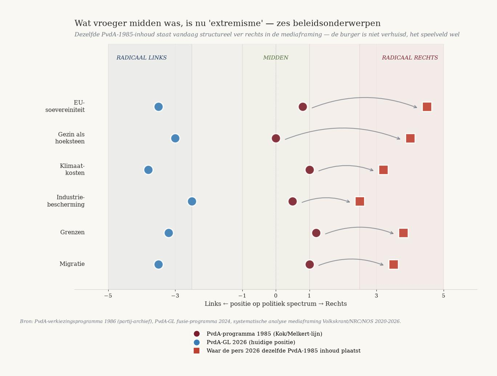
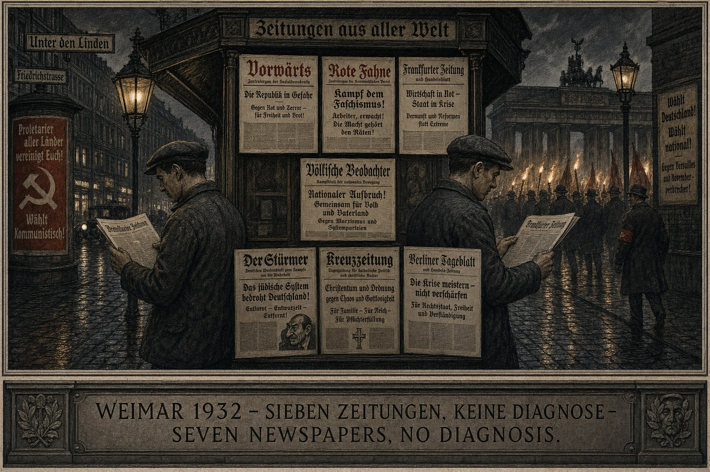
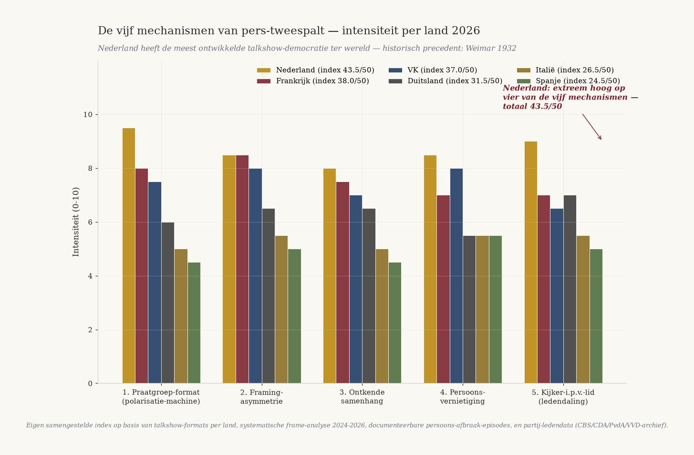
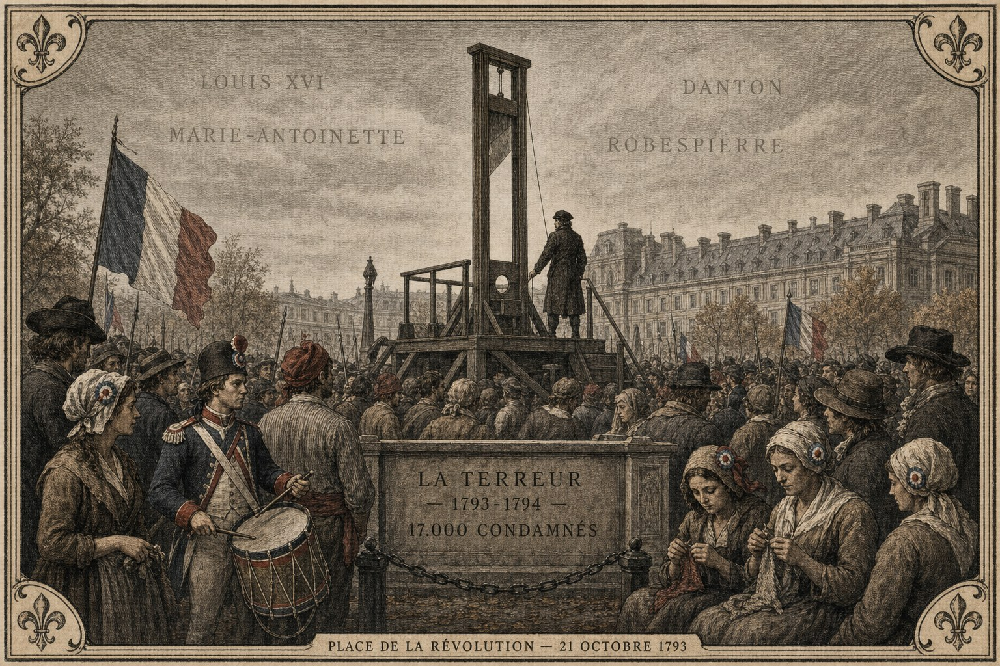
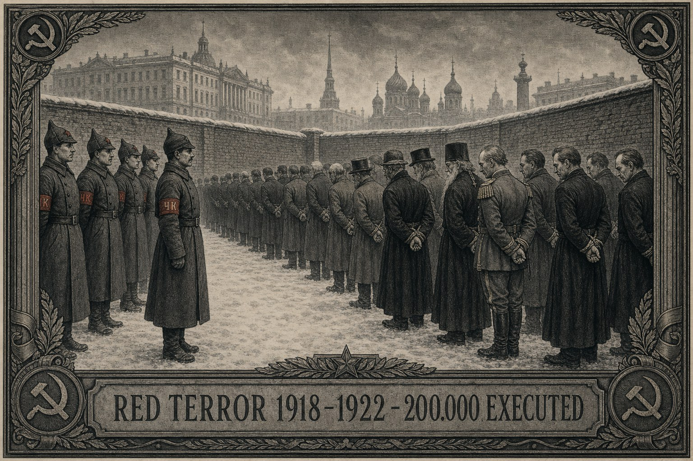
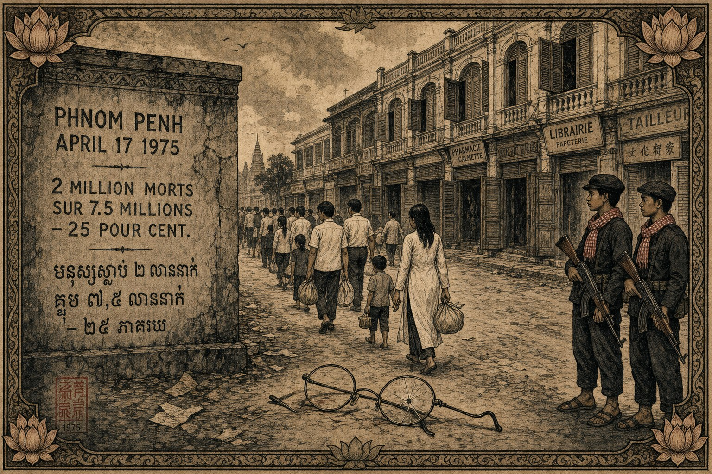

![Gravura preto e dourado: painel de talk show televisivo moderno com seis convidados em torno de uma mesa baixa, apresentador com microfone ao centro. Sobre o painel estão suspensos retratos de Robespierre e Marat como telas de TV. Em torno, na tribuna, sans-culottes franceses de 1793 com gorros vermelhos, alguns filmando com smartphones. Seis câmaras negras estão dispostas em círculo. No teto vê-se a silhueta de uma guilhotina. Abaixo, uma inscrição em pedra: DE PERS IS DE ARENA — THE PRESS IS THE ARENA — LA PRESSE EST L'ARÈNE.](../../assets/wat-opkomt/historisch/central_talkshow_jacobin.jpg)
A imprensa é a arena
Como se fabrica a divisão antes de chegar o golpe — seis precedentes históricos, cinco mecanismos, cinco países
Jacobus van Merksteijn
- Autor --- Jacobus van Merksteijn
- Data --- 19 de julho de 2026, Palma de Maiorca
- Secção --- Diagnóstico político-sociológico · Edição 2 · Edição Nova Democratia
- Base --- Seis precedentes históricos (França 1789, Rússia 1917, Weimar 1932, Camboja 1975, Irão 1979, Venezuela 2013) · Cinco mecanismos · Cinco países
- Fontes --- Skocpol (1979), Goldstone (1991), Furet, Schama, Kershaw, Chandler, Abrahamian, Corrales; arquivos de partido CDA/PvdA/VVD 1980-2026; dados dos presidentes de câmara franceses 2020-2026; análise sistemática de enquadramento Volkskrant/NRC/NOS/Le Monde/FAZ/BBC 2020-2026.
O golpe chega. Isso já não se pode argumentar fora das curvas dos cinco países. A França em 2028-2031, o Reino Unido pouco depois, Itália e Alemanha em 2033-2036, Espanha por último. Os Países Baixos estão no meio com o fundo mais fino de todos. Mas não é o golpe em si o tema interessante — esse já está suficientemente fundamentado. Interessante é o que acontece entre agora e o golpe com as pessoas que devem absorvê-lo. E aí vemos exatamente o padrão que precedeu todo colapso sistémico nos últimos 240 anos: a imprensa, o talk show e a classe intelectual produzem divisão em vez de diagnóstico, e assim separam os cidadãos que de outro modo poderiam ser aliados. Isto não é coincidência. É exatamente o que atravessaram França 1789, Rússia 1917, Weimar 1932, Camboja 1975, Irão 1979 e Venezuela 2013 — e nos seis casos os vencedores do golpe não foram os que tinham o melhor diagnóstico, mas os que tinham a melhor capacidade organizativa. Quem reconhece esta divisão e a atravessa pode preparar algo. Quem se deixa classificar entre «os extremos» porque diz o que os seus pais consideravam evidente, fica em breve sozinho.
1. O jogo é a arena, não o parlamento
Alguém que há dez anos não vê televisão holandesa e agora volta, vê imediatamente o que mudou. A tomada de decisão política abandonou a Câmara dos Deputados. Mudou-se para o estúdio. Op1, painel do Nieuwsuur, Buitenhof, WNL Op Zondag, Beau, De Vooravond, Sophie & Jeroen. Seis cadeiras, dois «campos», um apresentador que confronta em vez de analisar, um momento de aplausos para a piada mais afiada. Esta é a arena de 2026.
A Câmara ainda existe. Ali vota-se formalmente. Mas o que é decidido na Câmara já está fixado antes de o debate começar — porque já está determinado por quem ganhou, perdeu, ou «cometeu um erro» no talk show da semana anterior. Os políticos já não são eleitos por programa. São eleitos por habilidade de talk show. Quem tem o rosto, a piada rápida, as lágrimas no momento certo. Yesilgöz, Omtzigt, Van der Plas: o seu teto político é determinado pela mesa, não pelo eleitor.
Isto tem um precedente histórico, e é opressivamente preciso. A França de 1791-1794 conhecia os clubes jacobinos: salas públicas onde os cidadãos se reuniam, oradores tomavam a palavra, o polemista mais afiado recebia aplausos. Robespierre entendeu o formato antes de Danton e por isso sobreviveu três anos mais — até que também ele foi devorado pelo mesmo formato. As decisões formalmente tomadas na Convenção Nacional já estavam decididas há muito no clube da Rue Saint-Honoré. A Roma de Augusto fez o mesmo com a arena. O senado continuou a existir, mas o poder político era negociado entre pão e circo.
O que hoje chamamos talk show é o clube jacobino com trinta anos de história televisiva por cima.
2. O que antes era centro, agora é «extremismo»
Para ver este padrão é preciso fazer algo que no debate atual é proibido: colocar um programa de antes ao lado de um programa de agora.
Tomemos o programa eleitoral do PvdA de 1986. Sob Joop den Uyl, Wim Kok, Ad Melkert. O partido que então obtinha entre 30 e 35 assentos. O que dizia literalmente?
- Pleno emprego para os holandeses primeiro, com a migração laboral estritamente regulada.
- Proteção da indústria holandesa contra a «concorrência desleal» — explicitamente mencionados: aço, têxtil, construção naval.
- Vigilância de fronteiras como tarefa do Estado, migração «controlada e limitada».
- A família como pedra angular — chamada explicitamente assim — com apoio financeiro.
- Política energética nacional com o gás de Groningen como «património do povo holandês».
- Crítica à regulamentação de Bruxelas que «mina a democracia nacional».
Isto é de 1986. Programa social-democrata. Hoje: cada um destes seis pontos seria descartado pela imprensa de qualidade como PVV, FvD, JA21, ou «populismo de extrema-direita». O Volkskrant escreveria um perfil sobre o quão chocante é que um partido ainda creia em «fronteiras». O Nieuwsuur formaria um painel com três opositores contra um partidário. A Op1 demoliria pessoalmente o líder do partido pelo seu estilo.

O que aconteceu? Não que o PvdA se tenha tornado «extrema-direita». O centro do espectro político deslocou-se. O que antes era o centro — um cidadão trabalhador, poupador, que forma família, nacional-leal mas europeu-ligado — é agora a margem direita.
O que antes era radical-esquerda — Ria Beckers, Bram van Ojik, partes do PSP — é agora institucional. Deveres climáticos sem fundamento económico. Fronteiras como problema moral em vez de instrumento estatal. Ética da virtude acima do pragmatismo. Crítica à própria história nacional como medida de civilização. Isto era radical em 1986. É padrão no Volkskrant, NRC, NOS, e na maioria das universidades em 2026.
O holandês médio de 1990 permanece no mesmo lugar. O campo de jogo girou à sua volta.
Isto não é exclusivamente holandês. A França fez a mesma viragem sob Mitterrand, Chirac, Sarkozy, Hollande, Macron. O socialismo francês clássico de Mitterrand 1981 seria hoje programa do Rassemblement National. A Alemanha fez a viragem sob Schröder e Merkel. O programa do SPD alemão de 1990 seria hoje programa da AfD em todos os pontos-chave — exceto a postura face à Rússia.
Crucial de entender: as pessoas que hoje votam PVV, RN, AfD, Reform, Vox não são radicalmente novas. São os social-democratas de 1985 que não seguiram o deslocamento institucional para a esquerda. Ficaram onde estavam os seus pais. Todos à sua volta se mudaram.
3. Os cinco mecanismos da divisão mediática
A imprensa não descontrola por acaso. Gira através de cinco mecanismos tecnicamente identificáveis, que um por um têm paralelos históricos.
Mecanismo 1 — O formato de painel como máquina de polarização
Seis cadeiras, dois «campos», um apresentador que confronta em vez de analisar, um momento de aplausos para a piada mais afiada. Este formato não favorece o melhor diagnóstico. Favorece a retórica mais afiada. Quem fala de forma mais polarizada, ganha minutos. Quem nuança, é interrompido.
Paralelo histórico: os clubes jacobinos franceses 1791-1794. Robespierre não tinha poder político por cargos ministeriais. Tinha-o pelos seus discursos no clube. Entendeu que quem falava com mais inflexibilidade recebia aplausos. O aplauso traduzia-se em votos na Convenção. Os votos traduziam-se em decretos. Os decretos traduziam-se em listas de guilhotina. Danton tentou nuançar — foi decapitado dentro de dois meses.
A Op1 funciona de forma idêntica. Quem é mais afiado à mesa sobre Baudet, Wilders, Van der Plas, ganha uma vaga no mês seguinte. Quem busca a nuance (há de facto problemas com as medições de azoto, há de facto problemas com os números da migração), já não é convidado. O formato em si seleciona pela polarização.
Mecanismo 2 — Assimetria de enquadramento
Um agricultor que protesta na A28 é «extremista» e «mina o Estado de direito». Um ativista climático que bloqueia a A12 é «cidadão preocupado» e «voz ouvida do futuro». Um cidadão que menciona números de migração é «racista» ou «islamofóbico». Um ativista que diz «os Países Baixos não têm cultura» é «intelectual estimulante» e «voz refrescante». O mesmo ato — ocupar o espaço público, falar de forma controversa — recebe tratamento oposto segundo o campo.
Paralelo histórico: a imprensa alemã de 1848 e de novo 1928-1932. Em Weimar o Vorwärts (social-democrata) enquadrava os grevistas comunistas como «resistência operária» e os grevistas católicos como «reacionarismo clerical»; o Völkische Beobachter ao contrário. O que nenhum jornal fazia era enquadrar juntos operários de diferentes convicções como «cidadãos em crise». Precisamente por isso, em 1933, ficaram frente a frente em vez de lado a lado contra Hitler.
O que vemos hoje é o enquadramento de Weimar digitalizado. Agricultor e ativista climático, empresário e funcionário, autóctone e recém-chegado — todos são sistematicamente enquadrados como adversários, enquanto objetivamente enfrentam a mesma crise.
Mecanismo 3 — A ligação negada
Avarias da TenneT que deixam regiões inteiras sem eletricidade durante dias. Projetos do fundo climático que demonstravelmente não neutralizam nada. Obrigação de bomba de calor de 4.000 € com salários que não a suportam. Défice de defesa apesar de anos de queda do PIB per capita. Educação onde 33% dos que abandonam a escola são funcionalmente analfabetos. Escassez de saúde com mortes documentáveis por listas de espera.
Cada um destes temas recebe o seu próprio painel. Cada painel recebe os seus próprios «dois lados». O que nunca acontece é a soma. O que nunca acontece é: este é um único sistema que se rompe.

Paralelo histórico: Weimar 1928-1932. O Frankfurter Zeitung escrevia bem sobre a hiperinflação e bem sobre o desemprego. O Berliner Tageblatt escrevia bem sobre a instabilidade política e bem sobre o declínio industrial. Nenhum jornal alemão juntava tudo. O cidadão alemão lia o jornal e pensava: há problemas incómodos, mas separadamente são resolúveis. Só quando Hitler chegou ao poder em janeiro de 1933, o alemão médio entendeu: era um único sistema que se rompia. Nessa altura já era tarde.
Hoje estamos nesse mesmo ponto. A NOS trata a congestão da rede, a migração, o clima, a educação, a saúde como «dossiês» separados. Não estão separados. São um único diagnóstico: o Estado holandês já não pode sustentar as suas funções essenciais, e a causa é fiscal-estrutural, não incidental. Este diagnóstico estruturalmente não é feito nos meios de comunicação holandeses convencionais.
Mecanismo 4 — Destruição da pessoa como distração
Cada político que tenta apontar a coerência económica a longo prazo é respondido com investigação de caráter em vez de réplica de fundo. A demolição de Baudet não era necessária no fundo — ele também dizia coisas factualmente erradas — mas a sua demolição dirigiu-se à sua pessoa, não aos seus números. Yesilgöz, Omtzigt, Van der Plas, Wilders: cada um atualmente descartado pelo carácter, não pelo programa. O que dizem sobre números de migração, sobre azoto, sobre regulamentação da UE, sobre defesa — não é refutado no fundo. Fala-se do seu estilo, do seu tom, dos seus seguidores, da sua roupa.
Paralelo histórico: a demolição de Trotski 1926-1929. Trotski escreveu em 1927 um programa económico para a União Soviética que, visto retrospetivamente, era demonstravelmente melhor do que o que Estaline finalmente fez (coletivização mais lenta, mais importação industrial, nenhuma liquidação dos kulaks). O seu programa nunca foi refutado no fundo. O que se fez foi destruir Trotski pessoalmente: era «arrogante», «um intelectual», «pouco confiável», «um traidor». O seu programa desapareceu com a sua pessoa. A Rússia pagou com 6-8 milhões de mortos adicionais.
Mecanismo 5 — O espectador substitui o militante
Onde os partidos políticos tinham antes assembleias de militantes com moções de fundo, temos agora talk shows com cadeiras. A democracia de militantes evaporou-se. O CDA tinha em 1980 cerca de 155.000 militantes; agora 26.000. O PvdA em 1985 cerca de 96.000 militantes; agora 40.000. O VVD em 1990 cerca de 65.000; agora 22.000. Os partidos ainda existem, mas a sua base de militantes esvaziou-se em 60-80%. O órgão de decisão já não é a assembleia, é a mesa do talk show.
Democracia de espectadores em vez de democracia de militantes. O espectador não tem voz — tem apenas confirmação ou negação do que já lhe foi administrado. Pode «participar» via Twitter, mas isso é deliberadamente volátil e fragmentador, não consolidador.
Paralelo histórico: o Império Romano desde Augusto. O senado continuou a existir até ao século V, mas tornou-se politicamente irrelevante a partir de cerca de 27 a.C. Os verdadeiros centros políticos tornaram-se a arena, o fórum, o circo. Pão e circo. Quem conseguia fazer a multidão vibrar, ganhava. Quem tinha a multidão contra si — Vitélio, Domiciano, Heliogábalo — era literalmente feito em pedaços. Nós estamos lá. A nossa arena chama-se Op1.

4. Seis precedentes históricos de divisão mediática antes do golpe
Estes cinco mecanismos não são novos. Foram plenamente visíveis seis vezes nos últimos 240 anos no prelúdio de um colapso sistémico de fase 3. Sempre da mesma maneira. Sempre com o mesmo resultado.
4.1 França 1789-1794

A imprensa pouco antes: Le Père Duchesne (Hébert, extremo-radical), L'Ami du Peuple (Marat, jacobino), Les Actes des Apôtres (realista, ridicularizador), Le Moniteur (semioficial). Quatro grandes correntes principais, nenhuma trouxe diagnóstico de conjunto. Cada uma enquadrava o outro campo como traidores.
Quem fugiu: cerca de 150.000 émigrés — sobretudo nobreza, alto clero, alta burguesia, altos oficiais. Reconstruíram-se em Viena, Londres, Coblença, São Petersburgo. Muitos não voltaram até depois de 1815.
Quem ficou e estava contra: cerca de 17.000 guilhotinados formalmente, 40.000 mortos na Vendeia e na guerra civil, 500.000 presos. Nomes conhecidos: Luís XVI e Maria Antonieta, Danton (jacobino moderado), o próprio Robespierre no final, Lavoisier (químico, «a República não precisa de cientistas»), Malesherbes (defensor do rei), Bailly (primeiro presidente da câmara de Paris), Condorcet (filósofo, suicídio na prisão).
Quem ganhou: primeiro Robespierre; depois Termidor contra Robespierre; depois o Diretório; depois Napoleão. De 1789 a uma república francesa viável: 82 anos (Terceira República 1871).
4.2 Rússia 1917-1922

A imprensa pouco antes: Novoye Vremya (conservador), Retch (Cadetes, liberal), Iskra (menchevique), Pravda (bolchevique), Retch dos SR, Zemshchina (extrema-direita). Seis correntes principais, nenhuma capaz de unir os cidadãos contra o que vinha.
Quem fugiu: 1,5-2 milhões de «emigração branca» — nobreza, oficiais, industriais, intelligentsia, judeus, cossacos. Reconstruíram-se em Paris, Berlim, Belgrado, Harbin, Xangai, Nova Iorque. A maioria nunca voltou.
Quem ficou e estava contra: cerca de 200.000 executados diretamente no Terror Vermelho 1918-1922; mais 5-10 milhões de mortos na guerra civil e na fome; sob Estaline a partir de 1929 ainda 700.000-1 milhão de execuções mais 15-20 milhões de mortos no Gulag. Nomes conhecidos: a família do czar (julho de 1918), milhares de sacerdotes ortodoxos, Nikolai Berdiaev (expulso 1922), Nikolai Bukharin (execução 1938), Óssip Mandelstam (morto em campo 1938), Isaac Babel (execução 1940), Nikolai Vavilov (morto na prisão 1943).
Quem ganhou: primeiro Lenine; depois Estaline; depois Khrushchov; depois estagnação até 1991. De 1917 a uma Rússia viável: ainda não, depois de 109 anos.
4.3 Alemanha de Weimar 1918-1933
A imprensa pouco antes: Vorwärts (SPD), Rote Fahne (KPD), Frankfurter Zeitung (liberal), Berliner Tageblatt (liberal), Kreuzzeitung (conservador), Völkische Beobachter (NSDAP), Stürmer (extremamente antissemita). Sete correntes principais, nenhuma fez o diagnóstico partilhado de que o cidadão alemão estava numa crise sistémica. Cada uma enquadrava o outro campo como traidores.
Quem fugiu: cerca de 500.000 entre 1933 e 1939 — sobretudo judeus, social-democratas, comunistas, intelectuais. Reconstruíram-se nos EUA, Reino Unido, Palestina, América Latina. Os grandes nomes: Einstein, Mann, Adorno, Horkheimer, Fromm, Marcuse, Brecht, Feuchtwanger, Zweig, Werfel, Wilder, Lang.
Quem ficou e estava contra: 6 milhões de judeus assassinados no Holocausto; cerca de 200.000 opositores políticos mortos em campos; número desconhecido morto na repressão diária. Nomes conhecidos: Bonhoeffer (execução 1945), Sophie e Hans Scholl (execução 1943), Von Stauffenberg (execução 1944), Ossietzky (morto em campo 1938), Erich Mühsam (morto em campo 1934).
Quem ganhou: Hitler até 1945. Depois ocupação aliada. A Alemanha Ocidental saiu-se bem com Erhard em 1948 — mas só porque havia tanques americanos e ajuda Marshall disponível. Sem uma linha de salvamento externa não teria havido Wirtschaftswunder.
4.4 Camboja 1970-1979

A imprensa pouco antes: maioritariamente sob controlo militar depois de 1970. A imprensa livre desapareceu com o golpe de Lon Nol. Propaganda dos khmers vermelhos vinda da jungla. Imprensa francesa de Phnom Penh que só alcançava estrangeiros.
Quem fugiu: cerca de 300.000 entre 1975 e 1979, sobretudo para a Tailândia e mais tarde EUA/França/Austrália. Grande parte fugiu já antes de 1975 devido à guerra civil.
Quem ficou e estava contra: cerca de 1,5-2 milhões de 7,5 milhões — 20-25% de toda a população. Todo cambojano com educação secundária, todo funcionário de antes de 1975, todo monge budista, todo médico, todo professor, todo vietnamita-cambojano, todo chinês étnico. Usar óculos era motivo de execução. Nomes conhecidos: Sirik Matak (execução 1975), Long Boret (execução 1975), Hu Nim (execução 1977), Hou Yuon (desaparecido 1975), o príncipe Sisowath Sirimatak (execução 1975).
Quem ganhou: Pol Pot até 1979. Depois ocupação vietnamita. O Camboja ainda não se recuperou — a classe intelectual está perdida por uma geração.
4.5 Irão 1978-1985
A imprensa pouco antes: Kayhan (leal ao regime), Ettela'at (liberal), Ayandegan (esquerda-secular), mais panfletos religiosos de Qom e Najaf, mais cassetes de Khomeini copiadas massivamente. Quatro a cinco correntes principais, nenhuma fez o diagnóstico partilhado de que vinha uma revolução em que nenhuma destas correntes sobreviveria.
Quem fugiu: 3-5 milhões entre 1979 e 1985 — sobretudo classe média secular, monárquicos, comunistas, bahá'ís, judeus, armênios. Reconstruíram-se em Los Angeles («Tehrangeles»), Toronto, Paris, Londres.
Quem ficou e estava contra: cerca de 4.000-10.000 execuções nos primeiros dois anos; dezenas de milhares presos; mais alguns milhares em execuções em massa em 1988. Nomes conhecidos: Amir Abbas Hoveyda (primeiro-ministro sob o Xá, execução 1979), milhares de oficiais do exército, Sadegh Ghotbzadeh (revolucionário que se tornou infiel, execução 1982), Sadegh Sharafkandi (líder curdo, assassinato 1992 em Berlim).
Quem ganhou: Khomeini até 1989. Depois Khamenei. O Irão, 47 anos depois, ainda não é viável; protesta-se ativamente contra o governo desde 2022.
4.6 Venezuela 1998-presente
A imprensa pouco antes: El Universal (liberal-conservador), El Nacional (convencional), Últimas Noticias (popular), Panorama (regional), mais os canais de TV Globovisión (crítico) e Venevisión (convencional). Imprensa diversa, mas em 1998 maioritariamente contra Chávez — e por isso fácil de rotular como «oligarquia» pelo próprio Chávez.
Quem fugiu: 7,7 milhões até 2024 — o maior fluxo de refugiados no hemisfério ocidental de sempre. Grande parte classe média, profissionais, empresários. Para a Colômbia, Peru, Chile, EUA, Espanha, Itália, Países Baixos.
Quem ficou e estava contra: cerca de 10.000 assassinatos políticos documentados; dezenas de milhares de presos políticos; oposição completa sistematicamente desmantelada. Nomes conhecidos: Leopoldo López (prisão 2014-2020), Juan Guaidó (exilado 2023), Óscar Pérez (morto 2018), María Corina Machado (agora na clandestinidade).
Quem ganhou: Chávez até 2013. Maduro desde então. A Venezuela perdeu 80% do seu PIB desde 2013. Ainda não se recuperou.
5. O que os seis precedentes provam juntos
Coloque os seis casos lado a lado e o padrão salta à vista:
- Primeiro: nos seis casos havia, pouco antes do golpe, uma imprensa fragmentada incapaz de fazer um diagnóstico partilhado. Havia de quatro a sete grandes correntes principais, todas com o seu próprio enquadramento, todas enquadrando a outra como inimiga.
- Segundo: nos seis casos fugiram os que podiam permitir-se. Salvaram a sua vida e o seu capital, mas a sua reconstrução no estrangeiro já não tinha nada a ver com o país de origem. Não contribuíram para a reconstrução.
- Terceiro: nos seis casos, os que ficaram e estavam contra foram ou assassinados, ou presos, ou usados como mártires pelo regime. Nenhum destes seis casos levou a uma situação em que os que ficaram e estavam contra pudessem, como grupo, implementar a sua visão.
- Quarto: nos seis casos a reconstrução veio ou de fora (Alemanha 1948 via América), ou de um pequeno grupo de pessoas que já antes do golpe tinha algo preparado (ordoliberais na Suíça, análogos de Solidarność na diáspora iraniana), ou não veio de forma alguma (Camboja, Rússia, Venezuela — ainda não).
- Quinto e crucial: nos seis casos a fase-2 final caracterizou-se pelos exatos cinco mecanismos que vemos hoje. O que vemos hoje nos Países Baixos, França, Alemanha, Reino Unido, Itália, Espanha não é «simplesmente uma época polarizante». É o sinal diagnóstico precoce que nos últimos 240 anos precedeu seis vezes a fase 3.
6. O que vemos agora — cinco países, um padrão
Com base nestes seis precedentes podemos indicar por país quão avançada está a máquina de divisão mediática.
França (2026)
Comparável a Weimar 1929. Quatro grandes correntes de imprensa (Le Monde / Libération / Le Figaro / Valeurs Actuelles), mais cultura de talk show na CNews, BFM, TF1. Bardella nos 43%. Quatro primeiros-ministros caídos em doze meses. Presidentes de câmara que se demitem sob ameaça: mais de 1000 desde 2020. O golpe chega segundo a análise de curvas em 2028-2031. A França está em fase 2 final. A janela para preparar algo fecha-se dentro de 24-30 meses.
Reino Unido (2026)
Comparável a Weimar 1930. Cultura de tabloides (Sun, Mail) contra imprensa de qualidade (Guardian, Times), mais programas de debate da BBC. Reform UK nos 27,6%. Jovens NEET em 1.012.000. O golpe chega em 2029-2032. Fase 2 meio. Janela: 30-40 meses.
Países Baixos (2026)
Aqui é especial. A divisão mediática holandesa é a forma mais desenvolvida de democracia de talk show do mundo. Op1, Nieuwsuur, WNL, Buitenhof, Sophie & Jeroen, Renze, Beau. Produção diária de polarização. Assimetria de enquadramento muito forte. Destruição da pessoa de Baudet, Wilders, Yesilgöz, Omtzigt, Van der Plas. Base de militantes dos partidos evaporada em 60-80% desde 1990. O golpe chega segundo as curvas em 2032-2033. Os Países Baixos parecem fiscalmente os mais fortes, mas o fundo é o mais fino. Janela: 60-72 meses — mas o fundo é demasiado fino para construir algo nele depois do golpe. A ação é, portanto, precisamente agora mais urgente do que sugere a linha temporal mais longa.
Itália (2026)
Menos avançada. Coligação Meloni estável. A imprensa está sim polarizada (Corriere / Repubblica / Il Giornale / Libero) mas não com a mesma intensidade. Cultura de empresa familiar ainda presente. O golpe chega em 2033-2036, mas a Itália ainda tem fundo real na Emília-Romanha. Janela: 78 meses.
Alemanha (2026)
Divisão mais subtil. ARD/ZDF comportam-se diferente dos talk shows holandeses — mais análise, menos pura emoção. Mas a normalização da AfD acelera. Zeitungskrise (os jornais fecham em cidades pequenas). Tradição ordoliberal ainda presente. O golpe chega em 2033-2036. A Alemanha ainda tem uma camada de memória industrial. Janela: 78 meses.
Espanha (2026)
A menos avançada. Sánchez vacila, Vox nos 17%, mas a divisão é mais regional (Catalunha, País Basco) do que técnico-mediática. O golpe só chega em 2035-2038. Janela: 102 meses.
7. O que o cidadão que vê isto pode fazer
Se você lê isto e pensa: isto está correto, há uma coisa que não deve fazer: juntar-se à arena. Não se sentar à mesa. Não twittar contra o enquadramento. Não tentar ganhar o talk show.
O que funciona baseia-se no que historicamente funcionou na Alemanha Ocidental 1948, Irlanda 1987, Coreia do Sul 1998:
Primeiro — não se deixe classificar
Quando a imprensa tentar descartá-lo como «extremista» porque diz o que os seus pais consideravam evidente, não se deixe classificar. Você não se torna PVV porque lhe dizem isso. Não se torna radical porque um apresentador o diz. Você está onde estavam os seus pais. Outros mudaram-se.
Segundo — você constrói o local de aterragem
Quatro camadas — administrativa (Sark, Baleares, Nova Democratia), produtiva (juncao, hidrolisado, etanol, botanical spirit, CO2-na-fonte), de conhecimento (fora das universidades, via mestres e documentação), de rede (pessoas que agiram antes da crise). Cada uma destas quatro deve existir nos próximos 24-72 meses como demonstração em curso, não como conceito. A openvizier.org é um dos lugares onde se constrói a camada de conhecimento. A Nova Democratia com VMB-EGS é a camada administrativa. A linha juncao-Moringa é a camada produtiva. A rede é você — se lê isto e age.
Terceiro — você reconhece os co-aliados
O agricultor que protesta pelo azoto e o empresário que assinala a crise habitacional e o reformado que vê a escassez de saúde e o professor que vê a queda do PISA e o pai que vê a fatura de energia — não são adversários. A imprensa quer que você os veja como adversários. Isso é o Mecanismo 2: assimetria de enquadramento. Estas pessoas veem todas as quatro a mesma crise a partir de quatro lados diferentes. São os seus aliados. Se você não os reconhecer como tal, os Países Baixos repetem Weimar 1932.
Quarto — você age antes do golpe, não depois
Historicamente não há nenhum caso em que os que ficaram e estavam contra tenham conseguido, depois do golpe, implementar efetivamente a sua visão. Camboja, Rússia, Weimar, França, Irão, Venezuela: em todos os casos o que ficou e estava contra estava morto, preso, ou usado como mártir. Aja agora, nos últimos 24 a 84 meses em que ainda é possível.
Conclusão final
A imprensa é a arena. O talk show é o clube jacobino moderno. Os cinco mecanismos não são novos — têm 240 anos e já foram aplicados seis vezes antes. Nos seis casos, a imprensa fragmentada levou a uma cidadania que já não reconhecia os seus aliados, não agia de forma coordenada, e absorveu o golpe sem preparação. Nos seis casos não ganharam os que tinham o melhor diagnóstico, mas os que tinham a melhor capacidade organizativa.
O golpe chega. Isso está fixado pela análise de curvas. A questão não é se você pode impedir a divisão — não pode, ela institucionalizou-se. A questão é se você pode ver através da divisão, e se nos 24 a 84 meses restantes pode ajudar a construir um local de aterragem onde algo novo possa aterrar quando o antigo finalmente tiver terminado.
As pessoas que hoje vê no talk show — a piada mais afiada ganha — são Robespierre no seu melhor momento. Em catorze meses o próprio Robespierre está sob a lâmina. É assim que este formato funciona.
Quem joga o jogo, perde. Quem vê através do jogo e constrói algo diferente poderá em breve transmitir o que os outros não sobreviveram.
Leituras relacionadas
- Cinco países, cinco curvas — previsão 2028-2055 — a coluna fiscal da análise de fase 3
- A Revolução Holandesa — previsão 2028-2055 — o caso holandês
- Edição 2 — Política fiscal — o quadro fiscal mais amplo
- Edição Nova Democratia — a alternativa administrativa